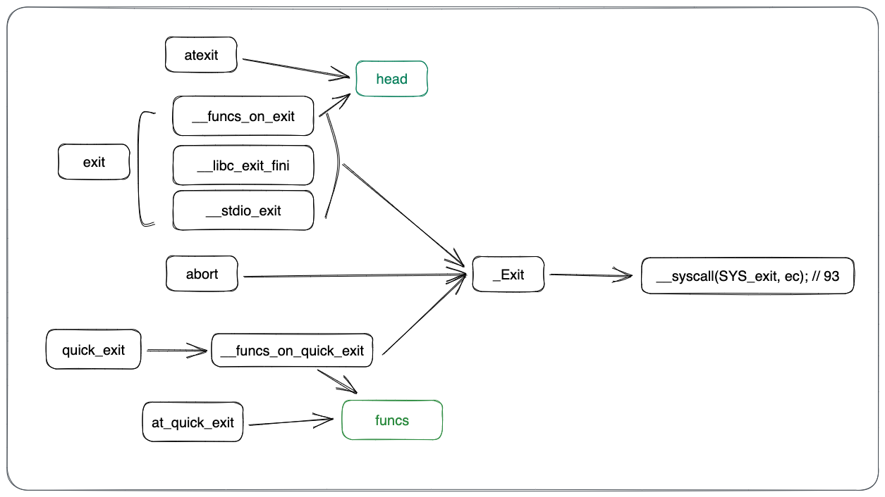
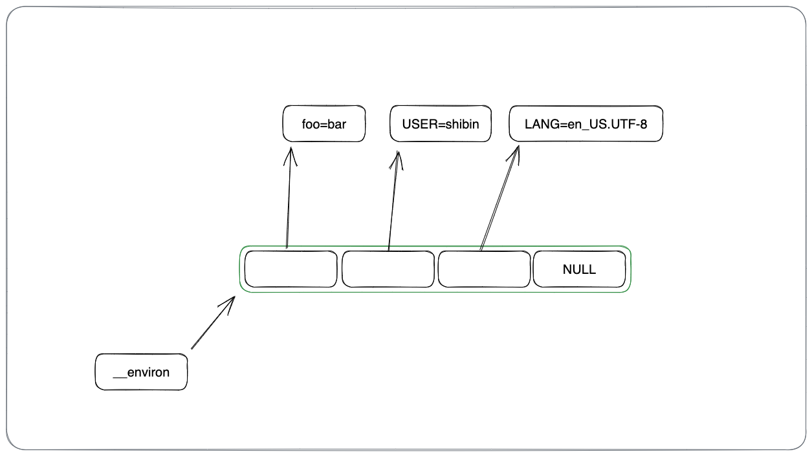

Glibc写的跟屎山一样，太难看，转而看musl libc，记录下
官网：https://musl.libc.org/
Libc库 位置： TODO：libc在系统中的位置，上下文；和其他实现有差异
特点：
实现方式
有些自已实现：调用libc自已的函数
有些调用syscall系统调用
有些调用编译器内置函数：编译器更清楚要编译目标平台的具体情况（体系结构）
缓存：会尽量的减少调用系统调用的次数
IO会带缓存：一批一批的处理，减少调用系统调用的次数
Heap 内存分配会带缓存：缓存不够用了才会去用brk扩充内存，或用mmap分配大块内存
Musl代码版本： commit f5f55d6589940fd2c2188d76686efe3a530e64e0 (HEAD, tag: v1.2.4, origin/master, origin/HEAD) Author: Rich Felker <dalias@aerifal.cx> Date: Mon May 1 23:39:41 2023 -0400 release 1.2.4
其它： 文章根据https://zh.cppreference.com/w/c/header 头文件的顺序
<assert.h>头文件 #ifdef NDEBUG #define assert(x) (void)0 #else #define assert(x) ((void)((x) || (__assert_fail(#x, __FILE__, __LINE__, __func__), 0))) #endif _Noreturn void __assert_fail(const char *, const char *, int , const char *);_Noreturn void __assert_fail(const char * expr, const char * file, int line, const char * func) { fprintf (stderr , "Assertion failed: %s (%s: %s: %d)\n" , expr, file, func, line); abort (); }
NDEBUG可以控制开关assert最后就是调用了fprintf + abort，组合一些信息：表达式、文件、函数、行号
(exp, exp)表达式
(exp, exp)表达式((x) || (__assert_fail(#x, __FILE__, __LINE__, __func__),0))的短路或运算||右边用了一个(exp, exp)的表达式，这在其它语言里面妥妥的一个tuple，在C里面，返回值只关心右边表达式的值。比如
#include <stdio.h> int main (int argc, char * argv[]) { int ret = (10 , 100 ); printf ("ret: %d\n" , ret); return 0 ; }
编译运行：
$ cc assert_demo.c && ./a.out ret: 100
拓展 assert非常好用，但如果能携带更多的用户自定义信息（和错误相关的上下文信息）就更好了；可以这样，或是增加一个自已的宏
#include <assert.h> #define _assert(exp, fmt) assert((exp) && fmt) int main (int argc, char * argv[]) { int foo = 100 ; assert(foo == 10 && "attach some msg" ); _assert(foo == 10 , "with some msg" ); return 0 ; }
输出：
TODO
<ctype.h> 这个没有啥好看的，就是一些判断范围值判断
static __inline int __isspace(int _c) { return _c == ' ' || (unsigned )_c-'\t' < 5 ; } #define isalpha(a) (0 ? isalpha(a) : (((unsigned)(a)|32)-'a' ) < 26) #define isdigit(a) (0 ? isdigit(a) : ((unsigned)(a)-'0' ) < 10) #define islower(a) (0 ? islower(a) : ((unsigned)(a)-'a' ) < 26) #define isupper(a) (0 ? isupper(a) : ((unsigned)(a)-'A' ) < 26) #define isprint(a) (0 ? isprint(a) : ((unsigned)(a)-0x20) < 0x5f) #define isgraph(a) (0 ? isgraph(a) : ((unsigned)(a)-0x21) < 0x5e) #define isspace(a) __isspace(a) #define isascii(a) (0 ? isascii(a) : (unsigned)(a) < 128)
<errno.h> int *__errno_location(void );#define errno (*__errno_location()) int * __errno_location(void ) { return &__pthread_self()->errno_val; } #define __pthread_self() ((pthread_t)__get_tp()) static inline uintptr_t __get_tp() { uintptr_t tp; __asm__ __volatile__("mv %0, tp" : "=r" (tp)); return tp; } struct pthread { struct pthread * self ; uintptr_t * dtv; struct pthread * prev , *next ; uintptr_t sysinfo; uintptr_t canary; int tid; int errno_val; volatile int detach_state; volatile int cancel; volatile unsigned char canceldisable, cancelasync; unsigned char tsd_used : 1 ; unsigned char dlerror_flag : 1 ; unsigned char * map_base; size_t map_size; void * stack ; size_t stack_size; size_t guard_size; uintptr_t canary; uintptr_t * dtv; };
errno除了描述一个错误码之外 ，还需要保证另外一件事：线程安全，不能说main线程发生错误，errno 被赋值，子线程也会使用main 线程的errno，这就乱套了；最理想的方式是每个线程拥有自已的errno；可以看下上面代码，保存errno最终取自当前线程实例里面的一个字段errno_val
thread local
TODO：C示例，其它语言里面怎么弄的
perrorvoid perror (const char * msg) { FILE* f = stderr ; char * errstr = strerror(errno); FLOCK(f); void * old_locale = f->locale; int old_mode = f->mode; if (msg && *msg) { fwrite(msg, strlen (msg), 1 , f); fputc(':' , f); fputc(' ' , f); } fwrite(errstr, strlen (errstr), 1 , f); fputc('\n' , f); f->mode = old_mode; f->locale = old_locale; FUNLOCK(f); }
把用户传入的 msg 和errno对应的字符串，一一输出到stderr
<iso646.h> 一些运算符的宏重新定义
#define and && #define and_eq &= #define bitand & #define bitor | #define compl ~ #define not ! #define not_eq != #define or || #define or_eq |= #define xor ^ #define xor_eq ^=
示例：
#include <stdio.h> #include <iso646.h> #include <stdbool.h> int main (int argc, char * argv[]) { if (true and false ) { printf ("and \n" ); } if (not false ) { printf ("not false \n" ); } return 0 ; }
代码更加的语义化了
<limits.h> 一些极限值的宏定义
#if '\xff' > 0 #define CHAR_MIN 0 #define CHAR_MAX 255 #else #define CHAR_MIN (-128) #define CHAR_MAX 127 #endif #define CHAR_BIT 8 #define SCHAR_MIN (-128) #define SCHAR_MAX 127 #define UCHAR_MAX 255 #define SHRT_MIN (-1 - 0x7fff) #define SHRT_MAX 0x7fff #define USHRT_MAX 0xffff #define INT_MIN (-1 - 0x7fffffff) #define INT_MAX 0x7fffffff #define UINT_MAX 0xffffffffU #define LONG_MIN (-LONG_MAX - 1) #define LONG_MAX __LONG_MAX #define ULONG_MAX (2UL * LONG_MAX + 1) #define LLONG_MIN (-LLONG_MAX - 1) #define LLONG_MAX 0x7fffffffffffffffLL #define ULLONG_MAX (2ULL * LLONG_MAX + 1)
<setjmp.h> setjmp 需要和 longjmp要一起看，jmp是汇编里面的一种概念。
int setjmp (jmp_buf) ;void longjmp (jmp_buf, int ) ;
setjmp和longjmp会根据不同的架构去实现，下面贴x32的汇编代码：
; src/setjmp/x32/setjmp.s /* Copyright 2011-2012 Nicholas J. Kain, licensed under standard MIT license */ .global __setjmp .global _setjmp .global setjmp .type __setjmp,@function .type _setjmp,@function .type setjmp,@function __setjmp: _setjmp: setjmp: mov %rbx,(%rdi) /* rdi is jmp_buf, move registers onto it */ mov %rbp,8(%rdi) mov %r12,16(%rdi) mov %r13,24(%rdi) mov %r14,32(%rdi) mov %r15,40(%rdi) lea 8(%rsp),%rdx /* this is our rsp WITHOUT current ret addr */ mov %rdx,48(%rdi) mov (%rsp),%rdx /* save return addr ptr for new rip */ mov %rdx,56(%rdi) xor %eax,%eax /* always return 0 */ ret ; src/setjmp/x32/longjmp.s /* Copyright 2011-2012 Nicholas J. Kain, licensed under standard MIT license */ .global _longjmp .global longjmp .type _longjmp,@function .type longjmp,@function _longjmp: longjmp: xor %eax,%eax cmp $1,%esi /* CF = val ? 0 : 1 */ adc %esi,%eax /* eax = val + !val */ mov (%rdi),%rbx /* rdi is the jmp_buf, restore regs from it */ mov 8(%rdi),%rbp mov 16(%rdi),%r12 mov 24(%rdi),%r13 mov 32(%rdi),%r14 mov 40(%rdi),%r15 mov 48(%rdi),%rsp jmp *56(%rdi) /* goto saved address without altering rsp */
setjmp代码：
保存寄存器里面的数据到jmp_buf（函数执行环境）
保存setjmp的返回地址，用于longjmp转跳回来
longjmp代码：
从jmp_buf中恢复之前保存的寄存器数据
跑回之前保存的返回地址（setjmp的返回地址）
<signal.h> TODO
<stdarg.h> 依赖于编译器、体系结构，编译器实现，传参时存取方式不一样
#include <bits/alltypes.h> #define va_start(v,l) __builtin_va_start(v,l) #define va_end(v) __builtin_va_end(v) #define va_arg(v,l) __builtin_va_arg(v,l) #define va_copy(d,s) __builtin_va_copy(d,s)
Linux内核实现：
#define _AUPBND (sizeof (acpi_native_int) - 1) #define _ADNBND (sizeof (acpi_native_int) - 1) #define _bnd(X, bnd) (((sizeof (X)) + (bnd)) & (~(bnd))) #define va_arg(ap, T) (*(T *)(((ap) += (_bnd (T, _AUPBND))) - (_bnd (T,_ADNBND)))) #define va_end(ap) (void) 0 #define va_start(ap, A) (void) ((ap) = (((char *) &(A)) + (_bnd (A,_AUPBND))))
TODO:
<stdatomic.h> <stdbool.h> #define true 1 #define false 0 #define bool _Bool
<stddef.h> #define NULL ((void*)0) #define offsetof(type, member) __builtin_offsetof(type, member)
调用编译器内置函数__builtin_offsetof
<stdint.h> 一些整形定义和其的极限值
#include <bits/alltypes.h> typedef int8_t int_fast8_t ;typedef int64_t int_fast64_t ;typedef int8_t int_least8_t ;typedef int16_t int_least16_t ;typedef int32_t int_least32_t ;typedef int64_t int_least64_t ;typedef uint8_t uint_fast8_t ;typedef uint64_t uint_fast64_t ;typedef uint8_t uint_least8_t ;typedef uint16_t uint_least16_t ;typedef uint32_t uint_least32_t ;typedef uint64_t uint_least64_t ;#define INT8_MIN (-1-0x7f) #define INT16_MIN (-1-0x7fff) #define INT32_MIN (-1-0x7fffffff) #define INT64_MIN (-1-0x7fffffffffffffff) #define INT8_MAX (0x7f) #define INT16_MAX (0x7fff) #define INT32_MAX (0x7fffffff) #define INT64_MAX (0x7fffffffffffffff) #define UINT8_MAX (0xff) #define UINT16_MAX (0xffff) #define UINT32_MAX (0xffffffffu) #define UINT64_MAX (0xffffffffffffffffu)
alltypes.h文件，编译生成，简化后：
#define _Addr long #define _Int64 long #define _Reg long #if __AARCH64EB__ #define __BYTE_ORDER 4321 #else #define __BYTE_ORDER 1234 #endif #define __LONG_MAX 0x7fffffffffffffffL typedef unsigned wchar_t ;typedef unsigned wint_t ;typedef int blksize_t ;typedef unsigned int nlink_t ;typedef float float_t ;typedef double double_t ;typedef struct { long long __ll; long double __ld; } max_align_t ; #define __LITTLE_ENDIAN 1234 #define __BIG_ENDIAN 4321 #define __USE_TIME_BITS64 1 typedef unsigned _Addr size_t ;typedef unsigned _Addr uintptr_t ;typedef _Addr ptrdiff_t ;typedef _Addr ssize_t ;typedef _Addr intptr_t ;typedef _Addr regoff_t ;typedef _Reg register_t ;typedef _Int64 time_t ;typedef _Int64 suseconds_t ;typedef signed char int8_t ;typedef signed short int16_t ;typedef signed int int32_t ;typedef signed _Int64 int64_t ;typedef signed _Int64 intmax_t ;typedef unsigned char uint8_t ;typedef unsigned short uint16_t ;typedef unsigned int uint32_t ;typedef unsigned _Int64 uint64_t ;typedef unsigned _Int64 u_int64_t ;typedef unsigned _Int64 uintmax_t ;typedef unsigned mode_t ;typedef unsigned _Reg nlink_t ;typedef _Int64 off_t ;typedef unsigned _Int64 ino_t ;typedef unsigned _Int64 dev_t ;typedef long blksize_t ;typedef _Int64 blkcnt_t ;typedef unsigned _Int64 fsblkcnt_t ;typedef unsigned _Int64 fsfilcnt_t ;typedef unsigned wint_t ;typedef unsigned long wctype_t ;typedef void * timer_t ;typedef int clockid_t ;typedef long clock_t ;struct timeval { time_t tv_sec; suseconds_t tv_usec; }; struct timespec { time_t tv_sec; int : 8 * (sizeof (time_t ) - sizeof (long )) * (__BYTE_ORDER == 4321 ); long tv_nsec; int : 8 * (sizeof (time_t ) - sizeof (long )) * (__BYTE_ORDER != 4321 ); }; typedef int pid_t ;typedef unsigned id_t ;typedef unsigned uid_t ;typedef unsigned gid_t ;typedef int key_t ;typedef unsigned useconds_t ;typedef unsigned long pthread_t ;typedef struct __pthread * pthread_t ;typedef int pthread_once_t ;typedef unsigned pthread_key_t ;typedef int pthread_spinlock_t ;typedef struct {unsigned __attr; } pthread_mutexattr_t ;typedef struct {unsigned __attr; } pthread_condattr_t ;typedef struct {unsigned __attr; } pthread_barrierattr_t ;typedef struct {unsigned __attr[2 ]; } pthread_rwlockattr_t ;struct _IO_FILE {char __x; };typedef struct _IO_FILE FILE ;typedef __builtin_va_list va_list;typedef __builtin_va_list __isoc_va_list;typedef struct __mbstate_t { unsigned __opaque1, __opaque2; } mbstate_t ; typedef struct __locale_struct * locale_t ;typedef struct __sigset_t { unsigned long __bits[128 / sizeof (long )]; } sigset_t ; struct iovec { void * iov_base; size_t iov_len; }; struct winsize { unsigned short ws_row, ws_col, ws_xpixel, ws_ypixel; }; typedef unsigned socklen_t ;typedef unsigned short sa_family_t ;typedef struct { union { int __i[sizeof (long ) == 8 ? 14 : 9 ]; volatile int __vi[sizeof (long ) == 8 ? 14 : 9 ]; unsigned long __s[sizeof (long ) == 8 ? 7 : 9 ]; } __u; } pthread_attr_t ; typedef struct { union { int __i[sizeof (long ) == 8 ? 10 : 6 ]; volatile int __vi[sizeof (long ) == 8 ? 10 : 6 ]; volatile void * volatile __p[sizeof (long ) == 8 ? 5 : 6 ]; } __u; } pthread_mutex_t ; typedef struct { union { int __i[sizeof (long ) == 8 ? 10 : 6 ]; volatile int __vi[sizeof (long ) == 8 ? 10 : 6 ]; volatile void * volatile __p[sizeof (long ) == 8 ? 5 : 6 ]; } __u; } mtx_t ; typedef struct { union { int __i[12 ]; volatile int __vi[12 ]; void * __p[12 * sizeof (int ) / sizeof (void *)]; } __u; } pthread_cond_t ; typedef struct { union { int __i[12 ]; volatile int __vi[12 ]; void * __p[12 * sizeof (int ) / sizeof (void *)]; } __u; } cnd_t ; typedef struct { union { int __i[sizeof (long ) == 8 ? 14 : 8 ]; volatile int __vi[sizeof (long ) == 8 ? 14 : 8 ]; void * __p[sizeof (long ) == 8 ? 7 : 8 ]; } __u; } pthread_rwlock_t ; typedef struct { union { int __i[sizeof (long ) == 8 ? 8 : 5 ]; volatile int __vi[sizeof (long ) == 8 ? 8 : 5 ]; void * __p[sizeof (long ) == 8 ? 4 : 5 ]; } __u; } pthread_barrier_t ;
<stdio.h> struct _IO_FILE {char __x; };typedef struct _IO_FILE FILE ;#define BUFSIZ 1024 #define FILENAME_MAX 4096 #define FOPEN_MAX 1000 #define TMP_MAX 10000 #define L_tmpnam 20 extern hidden FILE __stdin_FILE;extern hidden FILE __stdout_FILE;extern hidden FILE __stderr_FILE;#define stdin (&__stdin_FILE) #define stdout (&__stdout_FILE) #define stderr (&__stderr_FILE) struct _IO_FILE { unsigned flags; unsigned char *rpos, *rend; int (*close)(FILE*); unsigned char *wend, *wpos; unsigned char * mustbezero_1; unsigned char * wbase; size_t (*read)(FILE*, unsigned char *, size_t ); size_t (*write)(FILE*, const unsigned char *, size_t ); off_t (*seek)(FILE*, off_t , int ); unsigned char * buf; size_t buf_size; FILE * prev, *next; int fd; int pipe_pid; long lockcount; int mode; volatile int lock; int lbf; void * cookie; off_t off; char * getln_buf; void * mustbezero_2; unsigned char * shend; off_t shlim, shcnt; FILE * prev_locked, *next_locked; struct __locale_struct * locale ; }; typedef struct _IO_FILE FILE ;
一些宏定义：buf缓冲区大小，文件名长度
默认标准I/O：stdin、stdout、stderr
private私有、封装：对外和对内的struct _IO_FILE不一样，隐藏成员字段
<stdlib.h> 这个比较多：
内存管理：后面分开单独讲
程序工具
字符串转换
随机数
算法
int atoi (const char *) ;long atol (const char *) ;long long atoll (const char *) ;double atof (const char *) ; int atoi (const char * s) { int n = 0 , neg = 0 ; while (isspace (*s)) s++; switch (*s) { case '-' : neg = 1 ; case '+' : s++; } while (isdigit (*s)) n = 10 * n - (*s++ - '0' ); return neg ? n : -n; }
前三个实现都基本一个，拿一个出来讲：
处理字符串前面的空格
处理正负符号
处理数字字符，转成负数累加？？？
看是否是负数，是正数则取反？
float strtof (const char * __restrict, char ** __restrict) ;double strtod (const char * __restrict, char ** __restrict) ;long double strtold (const char * __restrict, char ** __restrict) ;long strtol (const char * __restrict, char ** __restrict, int ) ;unsigned long strtoul (const char * __restrict, char ** __restrict, int ) ;long long strtoll (const char * __restrict, char ** __restrict, int ) ;unsigned long long strtoull (const char * __restrict, char ** __restrict, int ) ;
// TODO:
随机数 int rand (void ) ;void srand (unsigned ) ;static uint64_t seed;void srand (unsigned s) { seed = s - 1 ; } int rand (void ) { seed = 6364136223846793005ULL * seed + 1 ; return seed >> 33 ; }
进程退出函数 void abort (void ) ;int atexit (void (*)(void )) ;void exit (int ) ;void _Exit(int );int at_quick_exit (void (*)(void )) ;void quick_exit (int ) ;

at_xxx前缀的函数是为xxx服务的，添加退出时要调用的函数
atexit添加函数，exit调用时会调用这些函数at_quick_exit添加函数，quick_exit调用时会调用这些函数
exit/abort/quick_exit最终都是调用_Exit退出，内部调用系统调用SYS_exit，编号93
环境变量 int setenv (const char *, const char *, int ) ;int unsetenv (const char *) ;char * getenv (const char *) ;int putenv (char *) ;int clearenv (void ) ;
问题：env内部是维护了一个什么结构，让我们可以去set、get、put、clear操作env变量？
#include <unistd.h> char **__environ = 0 ;weak_alias(__environ, ___environ); weak_alias(__environ, _environ); weak_alias(__environ, environ);
一个char的二级指针；实则是一个char*的数组；另外一个问题是：env不维护环境变量字符串的内存，需要用户自已维护

把putenv.c的代码进行了简化和改写，留下了当第一次添加数据的情况，这样看起来更加容易理解：
#include <unistd.h> char **__environ = 0 ;int __putenv(char * s, size_t l, char * r) { size_t i = 0 ; char ** newenv; newenv = malloc (sizeof (*newenv) * (i + 2 )); if (i) memcpy (newenv, __environ, sizeof (*newenv) * i); newenv[i] = s; newenv[i + 1 ] = 0 ; __environ = newenv; return 0 ; } int putenv (char * s) { size_t l = __strchrnul(s, '=' ) - s; return __putenv(s, l, 0 ); }
其它几个函数都是围绕这个char*数组来进行增删改查，就不多讲了。te
<string.h> // TODO:
问题 为什么基本上一个函数实现对应一个c文件？ 比如：malloc函数对应实现在malloc.c文件，free函数对应实现在free.c文件，一个函数对应一个实现文件。因为libc库过于基础，应用层的每个程序都会用到；在程序编译链接时，避免把不必要的函数链接到应用程序，会增加程序体积，占用磁盘和内存。